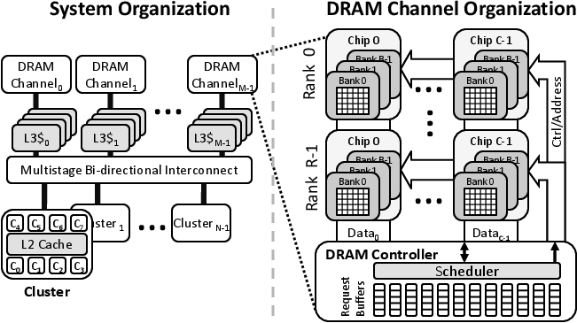

Rigel Machine Description
A high-level diagram of the Rigel architecture is shown below.

- The baseline Rigel core is 2-wide, in-order, and has a 32-entry unified register file and a single-precision FPU.
- Each core has its own small L1I and L1D caches, and cores are organized into clusters that share a unified L2 cache.
- The L1 and L2 caches within each cluster are coherent with one another, but are not coherent with caches in other clusters.
- All clusters on the chip share a unified L3 cache, also called the global cache.
- Clusters are grouped into tiles, and each tile has a 4-ary tree interconnect aggregating it into a single global network port.
- Tiles are connected to global cache banks via a multi-stage crossbar.
- The L3 cache is backed by high-performance GDDR5 memory controllers.
Cores, network, and caches ran at 1.2GHz by default; the frequency can be changed in $RIGEL_SIM/rigel-sim/include/sim.h.
For more high-level architecture, memory model, and programming model details, see the publications here.
Rigel implements a cycle-accurate GDDR5 DRAM controller with several scheduling algorithms from the literature, including FR-FCFS and FCFS. The DRAM operates at 6Gbps per pin by default; the frequency and detailed timing constraints can be changed in $RIGEL_SIM/rigel-sim/include/dram.h.
A high-level diagram of Rigel's DRAM architecture is shown below.
